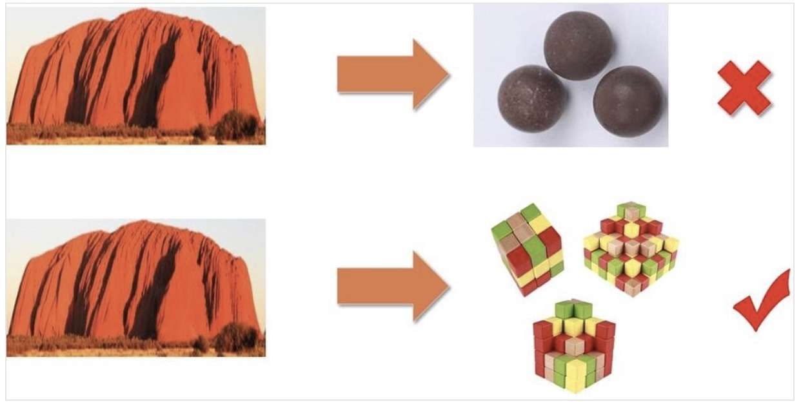
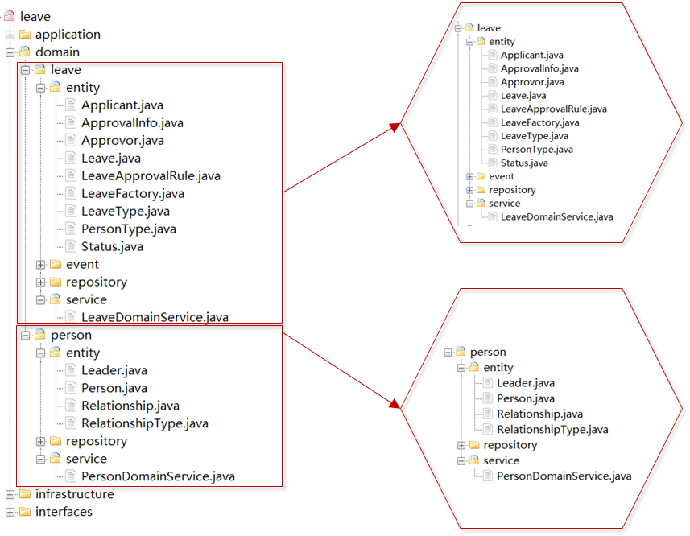

- 00 开篇词 学好了DDD，你能做什么？.md.html
- 01 领域驱动设计：微服务设计为什么要选择DDD.md.html
- 02 领域、子域、核心域、通用域和支撑域：傻傻分不清？.md.html
- 03 限界上下文：定义领域边界的利器
- 04 实体和值对象：从领域模型的基础单元看系统设计.md.html
- 05 聚合和聚合根：怎样设计聚合？.md.html
- 06 领域事件：解耦微服务的关键.md.html
- 07 DDD分层架构：有效降低层与层之间的依赖.md.html
- 08 微服务架构模型：几种常见模型的对比和分析.md.html
- 09 中台：数字转型后到底应该共享什么？.md.html
- 10 DDD、中台和微服务：它们是如何协作的？.md.html
- 11 DDD实践：如何用DDD重构中台业务模型？.md.html
- 12 领域建模：如何用事件风暴构建领域模型？.md.html
- 13 代码模型（上）：如何使用DDD设计微服务代码模型？.md.html
- 14 代码模型（下）：如何保证领域模型与代码模型的一致性？.md.html
- 15 边界：微服务的各种边界在架构演进中的作用？.md.html
- 16 视图：如何实现服务和数据在微服务各层的协作？.md.html
- 17 从后端到前端：微服务后，前端如何设计？.md.html
- 18 知识点串讲：基于DDD的微服务设计实例.md.html
- 19 总结（一）：微服务设计和拆分要坚持哪些原则？.md.html
- 20 总结（二）：分布式架构关键设计10问.md.html
- 答疑：有关3个典型问题的讲解.md.html
- 结束语 所谓高手，就是跨过坑和大海.md.html
15 边界：微服务的各种边界在架构演进中的作用？
你好，我是欧创新。
前几讲我们已经介绍过了，在用 DDD 进行微服务设计时，我们可以通过事件风暴来确定领域模型边界，划定微服务边界，定义业务和系统运行边界，从而保证微服务的单一职责和随需而变的架构演进能力。
那重点落到边界的时候，总结一下就是，微服务的设计要涉及到逻辑边界、物理边界和代码边界等等。
那么这些边界在微服务架构演进中到底起到什么样的作用？我们又该如何理解这些边界呢？这就是我们今天重点要解决的问题。
演进式架构
在微服务设计和实施的过程中，很多人认为：“将单体拆分成多少个微服务，是微服务的设计重点。”可事实真的是这样吗？其实并非如此！
Martin Fowler 在提出微服务时，他提到了微服务的一个重要特征——演进式架构。那什么是演进式架构呢？演进式架构就是以支持增量的、非破坏的变更作为第一原则，同时支持在应用程序结构层面的多维度变化。
那如何判断微服务设计是否合理呢？其实很简单，只需要看它是否满足这样的情形就可以了：随着业务的发展或需求的变更，在不断重新拆分或者组合成新的微服务的过程中，不会大幅增加软件开发和维护的成本，并且这个架构演进的过程是非常轻松、简单的。
这也是微服务设计的重点，就是看微服务设计是否能够支持架构长期、轻松的演进。
那用 DDD 方法设计的微服务，不仅可以通过限界上下文和聚合实现微服务内外的解耦，同时也可以很容易地实现业务功能积木式模块的重组和更新，从而实现架构演进。
微服务还是小单体？
有些项目团队在将集中式单体应用拆分为微服务时，首先进行的往往不是建立领域模型，而只是按照业务功能将原来单体应用的一个软件包拆分成多个所谓的“微服务”软件包，而这些“微服务”内的代码仍然是集中式三层架构的模式，“微服务”内的代码高度耦合，逻辑边界不清晰，这里我们暂且称它为“小单体微服务”。
下面这张图也很好地展示了这个过程。

而随着新需求的提出和业务的发展，这些小单体微服务会慢慢膨胀起来。当有一天你发现这些膨胀了的微服务，有一部分业务功能需要拆分出去，或者部分功能需要与其它微服务进行重组时，你会发现原来这些看似清晰的微服务，不知不觉已经摇身一变，变成了臃肿油腻的大单体了，而这个大单体内的代码依然是高度耦合且边界不清的。
“辛辛苦苦好多年，一夜回到解放前啊！”这个时候你就需要一遍又一遍地重复着从大单体向单体微服务重构的过程。想想，这个代价是不是有点高了呢？
其实这个问题已经很明显了，那就是边界。
这种单体式微服务只定义了一个维度的边界，也就是微服务之间的物理边界，本质上还是单体架构模式。微服务设计时要考虑的不仅仅只有这一个边界，别忘了还要定义好微服务内的逻辑边界和代码边界，这样才能得到你想要的结果。
那现在你知道了，我们一定要避免将微服务设计为小单体微服务，那具体该如何避免呢？清晰的边界人人想要，可该如何保证呢？DDD 已然给出了答案。
微服务边界的作用
你应该还记得 DDD 设计方法里的限界上下文和聚合吧？它们就是用来定义领域模型和微服务边界的。
我们再来回顾一下 DDD 的设计过程。
在事件风暴中，我们会梳理出业务过程中的用户操作、事件以及外部依赖关系等，根据这些要素梳理出实体等领域对象。根据实体对象之间的业务关联性，将业务紧密相关的多个实体进行组合形成聚合，聚合之间是第一层边界。根据业务及语义边界等因素将一个或者多个聚合划定在一个限界上下文内，形成领域模型，限界上下文之间的边界是第二层边界。
为了方便理解，我们将这些边界分为：逻辑边界、物理边界和代码边界。
逻辑边界主要定义同一业务领域或应用内紧密关联的对象所组成的不同聚类的组合之间的边界。事件风暴对不同实体对象进行关联和聚类分析后，会产生多个聚合和限界上下文，它们一起组成这个领域的领域模型。微服务内聚合之间的边界就是逻辑边界。一般来说微服务会有一个以上的聚合，在开发过程中不同聚合的代码隔离在不同的聚合代码目录中。
逻辑边界在微服务设计和架构演进中具有非常重要的意义！
微服务的架构演进并不是随心所欲的，需要遵循一定的规则，这个规则就是逻辑边界。微服务架构演进时，在业务端以聚合为单位进行业务能力的重组，在微服务端以聚合的代码目录为单位进行微服务代码的重组。由于按照 DDD 方法设计的微服务逻辑边界清晰，业务高内聚，聚合之间代码松耦合，因此在领域模型和微服务代码重构时，我们就不需要花费太多的时间和精力了。
现在我们来看一个微服务实例，在下面这张图中，我们可以看到微服务里包含了两个聚合的业务逻辑，两个聚合分别内聚了各自不同的业务能力，聚合内的代码分别归到了不同的聚合目录下。
那随着业务的快速发展，如果某一个微服务遇到了高性能挑战，需要将部分业务能力独立出去，我们就可以以聚合为单位，将聚合代码拆分独立为一个新的微服务，这样就可以很容易地实现微服务的拆分。

另外，我们也可以对多个微服务内有相似功能的聚合进行功能和代码重组，组合为新的聚合和微服务，独立为通用微服务。现在你是不是有点做中台的感觉呢？
物理边界主要从部署和运行的视角来定义微服务之间的边界。不同微服务部署位置和运行环境是相互物理隔离的，分别运行在不同的进程中。这种边界就是微服务之间的物理边界。
代码边界主要用于微服务内的不同职能代码之间的隔离。微服务开发过程中会根据代码模型建立相应的代码目录，实现不同功能代码的隔离。由于领域模型与代码模型的映射关系，代码边界直接体现出业务边界。代码边界可以控制代码重组的影响范围，避免业务和服务之间的相互影响。微服务如果需要进行功能重组，只需要以聚合代码为单位进行重组就可以了。
正确理解微服务的边界
从上述内容中，我们知道了，按照 DDD 设计出来的逻辑边界和代码边界，让微服务架构演进变得不那么费劲了。
微服务的拆分可以参考领域模型，也可以参考聚合，因为聚合是可以拆分为微服务的最小单位的。但实施过程是否一定要做到逻辑边界与物理边界一致性呢？也就是说聚合是否也一定要设计成微服务呢？答案是不一定的，这里就涉及到微服务过度拆分的问题了。
微服务的过度拆分会使软件维护成本上升，比如：集成成本、发布成本、运维成本以及监控和定位问题的成本等。在项目建设初期，如果你不具备较强的微服务管理能力，那就不宜将微服务拆分过细。当我们具备一定的能力以后，且微服务内部的逻辑和代码边界也很清晰，你就可以随时根据需要，拆分出新的微服务，实现微服务的架构演进了。
当然，还要记住一点，微服务内聚合之间的服务调用和数据依赖需要符合高内聚松耦合的设计原则和开发规范，否则你也不能很快完成微服务的架构演进。
总结
今天我们主要讨论了微服务架构设计中的各种边界在架构演进中的作用。
**逻辑边界：**微服务内聚合之间的边界是逻辑边界。它是一个虚拟的边界，强调业务的内聚，可根据需要变成物理边界，也就是说聚合也可以独立为微服务。
**物理边界：**微服务之间的边界是物理边界。它强调微服务部署和运行的隔离，关注微服务的服务调用、容错和运行等。
**代码边界：**不同层或者聚合之间代码目录的边界是代码边界。它强调的是代码之间的隔离，方便架构演进时代码的重组。
通过以上边界，我们可以让业务能力高内聚、代码松耦合，且清晰的边界，可以快速实现微服务代码的拆分和组合，轻松实现微服务架构演进。但有一点一定要格外注意，边界清晰的微服务，不是大单体向小单体的演进。